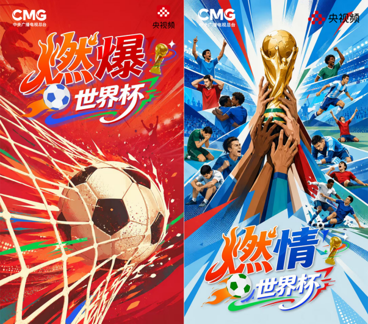

案例发生了什么



谁参与五粮液
发生节点 / 场景持权媒体与大屏；总台转播黄金合作
传播形式影片、短视频或节目内容；社交互动与平台内容；商品、零售或交易承接
传播核心竞猜、内容和产品扫码的大小屏闭环
五粮液作为总台世界杯转播黄金合作伙伴，以《谁是冠军》把竞猜、内容、扫码和产品收藏连接起来。
现有资料可确认，这项动作由五粮液发起，发生在持权媒体与大屏；总台转播黄金合作，主要通过影片、短视频或节目内容；社交互动与平台内容；商品、零售或交易承接抵达受众。执行过程可以连成一条完整路径：先冠军悬念组织节目化内容；随后让二维码与商品成为参与入口；最后赛前到决赛的连续猜测延长互动周期。这些动作共同服务于“竞猜、内容和产品扫码的大小屏闭环”，让页面能够区分参与主体、传播载体、用户接触点和品牌最终想留下的认知。
动作顺序：用冠军悬念组织节目化内容；让二维码与商品成为参与入口；以赛前到决赛的连续猜测延长互动周期。
当前资料边界：已核（总台官方及阶段数据）；已归档节目与传播物料。页面只把已经记录的参与路径和动作写成事实，未取得一手材料的执行细节、投放规模与效果不作推定。
MARKETING KNOWLEDGE ROUTER · 营销知识路由器
营销启发卡
用三张卡片保留最值得记住、讨论和迁移的部分。 卡片底部按主题连接全站相关案例、经典方法与深度文章。
01核心动作
用冠军悬念组织节目化内容
用冠军悬念组织节目化内容；让二维码与商品成为参与入口。
02传播与商业机制
竞猜、内容和产品扫码的大小屏闭环
以“总台转播黄金合作”为资源起点，进入直播、节目、演播室、短视频、互动工具与跨屏行动入口；结果优先观察收视/观看、互动、搜索、扫码、会员与广告/商业承接，不把曝光直接等同于销售。
03可复用的方法
竞猜不是独立活动
竞猜不是独立活动，必须与商品和内容共同设计，才能形成大小屏闭环。
适用条件、风险与证据
- 区分电视贴片、节目冠名、平台定制和直播互动，不混同统计。
- 提前按赛程准备高光、平淡和意外结果的内容响应。
- 用跨屏搜索、领券、到店或线索数据补足单一收视口径。
核验记录可将已核动作作为内部判断基础；涉及投放规模、销售结果或合作细则时，仍应以品牌、平台或权利方的一手发布为准。 当前记录：已核（总台官方及阶段数据）；素材状态：已归档节目与传播物料。
品牌与权威来源物料
这里只展示可追溯到品牌、权利方、官方账号或明确注明原始出处的真实物料；研究图卡不计入案例图片。
资料与来源
官方资料、结果数据与下一步
已验证事实
- 《谁是冠军》是五粮液与央视频合作的世界杯定制微综艺，以竞猜、厨房与举杯场景把品牌角色写进节目内容，而不是只做片头冠名。
- 截至 2026 年 6 月 28 日，3 期节目合辑在央视频播放超过 3,200 万，相关话题总阅读超过 1 亿。
- 总台 7 月 8 日赛后复盘称，全网相关话题阅读接近 1.6 亿、视频播放超过 1 亿；两个时间点和统计范围不同，不可直接相加。
可追溯的结果
- 已有节目级传播口径，但未公开扫码、搜索、领券、门店动销或授权商品购买转化。
原始来源
- 中央广播电视总台总经理室 · 2026-06-08五粮液携手总台 2026 世界杯转播
- 中央广播电视总台总经理室 · 2026-07-01世界杯赛程中段传播数据
- 中央广播电视总台总经理室 · 2026-07-08央视频世界杯品牌合作赛后复盘
来源链接优先指向品牌、权利方或持权媒体官方页面；品牌自述数据按原始定义记录，不视作独立审计结果。